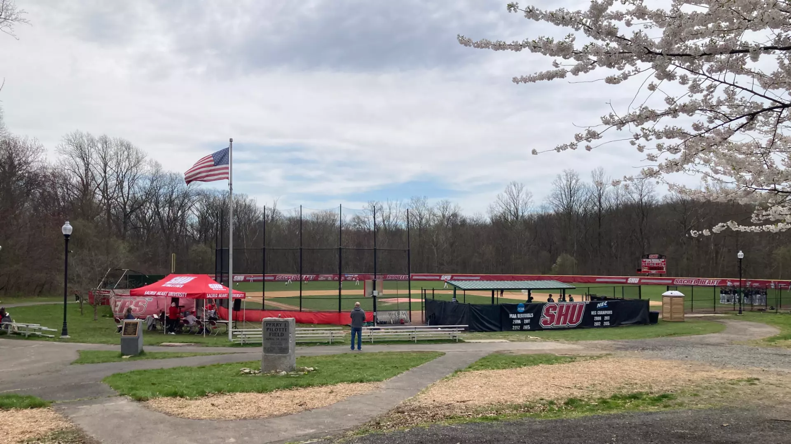

Sacred Heart played their home baseball games at The Ballpark at Harbor Yard in nearby Bridgeport from 2001-2017. When the ballpark was closed in order to convert it to a concert venue, Sacred Heart was forced to play in several area ballparks until a suitable replacement was found. In 2019 the Pioneers found a field closer to home at neighboring Veteran’s Memorial Park, right across the street from the Sacred Heart campus.
https://www.stadiumjourney.com/stadiums/veterans-memorial-park-sacred-heart-pioneers